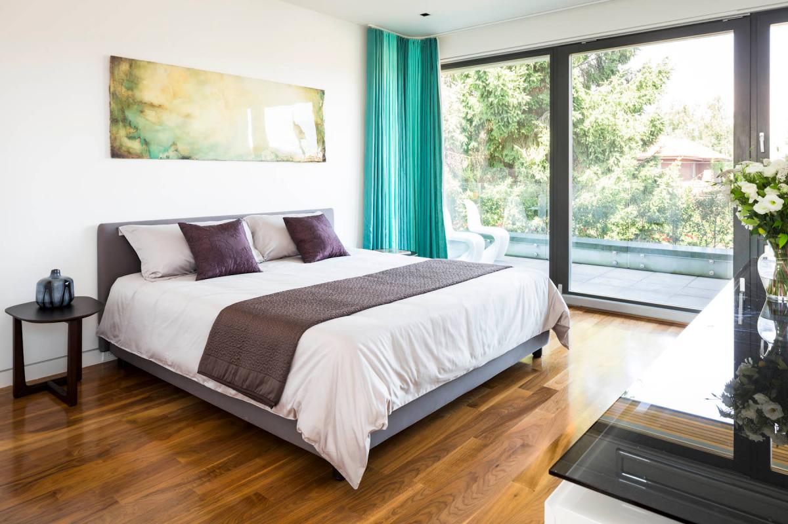
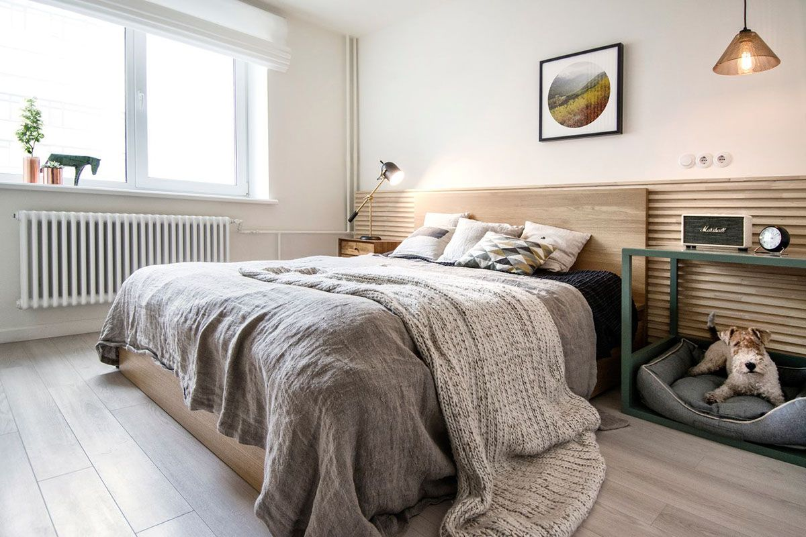
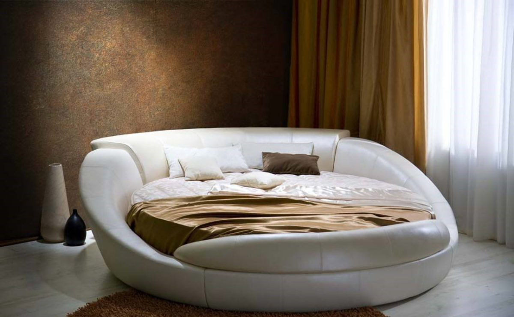
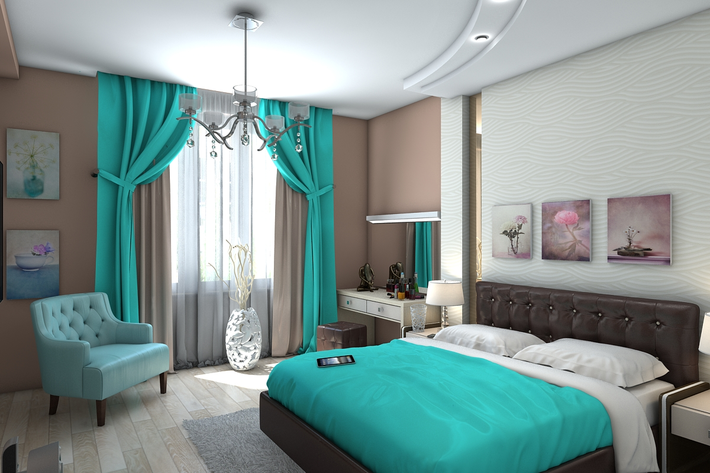

Як правильно розташувати ліжко в спальні
Затишна спальня з комфортним ліжком, гарантує відпочинок на всіх рівнях: тілесному, розумовому, емоційному,
що
сприятливо позначається на загальному життєвому тонусі. Людина, щодня має якісний відпочинок, легше
переносить
стреси, не піддається депресій та інших хвороб, що зустрічаються у жителів мегаполісів. Але щоб створити
такий
розслабляючий, ідилічний куточок в квартирі, важливо враховувати безліч факторів: кольорове оформлення,
кількість меблів, її правильна розстановка, підбір аксесуарів. У даній статті хочемо поділитися з вами
прикладами вдалого розташування ліжка в спальні, а також розповісти про нюанси, здатних гармонізувати
інтер'єр,
пристосувати його для максимального розслаблення і якісного сну.

Важливі аспекти при розташуванні ліжка
Зайнявся перестановкою в спальні, або плануючи придбання нового ліжка, потрібно ретельно продумувати її місце
розташування. Тому як стане головний предмет кімнати відпочинку, буде залежати її психологічний клімат,
затишок,
функціональність. В першу чергу, хочемо звернути увагу на те, чого робити не слід.
-
Не рекомендується ставити двоспальне ліжко довгою частиною до стіни, залишаючи лише один підхід. Це
буде
доставляти незручності двом людям, провокувати розбіжності, створювати негативні асоціації зі
спальним
місцем.
-
Небажано розташовувати ложе узголів'ям до вікна.Крім сенсорних подразників (шум вулиці, сонячні
промені,
штучне освітлення), така установка чревата психологічним виснаженням. За фен-шуй, вікно вважається
каналом зв'язку із зовнішнім світом, за яким витікає і прибуває нова інформація. Природно, для сну
такі
потоки несприятливі, оскільки будуть навантажувати мозок і тримати тіло в тонусі.
-
Поставить ліжко напроти дзеркала також буде помилкою. Дзеркала, здавна вважалися сильними, магічними
предметами, здатними впливати на людину. Хоча для раціональних особистостей це не більше ніж
марновірство, підсвідомість може почати захищатися, тим самим позбавляючи організм якісного нічного
відпочинку.
-
Не рекомендується ставити ложе під стіною з дверима. Таке розташування позбавляє сплячого огляду,
створюючи відчуття беззахисності. Міцно заснути в подібних умовах не вийде, оскільки мозок буде
пильнувати небезпечні сигнали.

Щоб мати здоровий, міцний сон, важливо створити не тільки естетичні, але психологічно комфортні умови, в яких
настане довгоочікуване, повне розслаблення. Найбільш вдалими, з точки зору безпеки, вважаються такі варіанти
розташування:
-
біля стіни, посередині (щоб підхід був забезпечений з двох сторін), з оглядом на двері (щоб
відпочиваючий міг бачити людину, яка входить);
-
по діагоналі (узголів'я отримує підтримку від двох стін, також забезпечуються окремі підходи до
спального місця, навіть якщо кімната маленька), приклад на фото;
-
біля стіни, навпроти вікна (такий спосіб розташування буде гідною кандидатурою, якщо ваші вікна
виходять на західну сторону. Ранкові промені сонця не завадять сну, а стіна в головах створить
додатковий психологічний захист);
-
в глухому куті (дотичні стіни якого не мають дверей, вікон), за умови, що ліжко не укомплектована
ізножной планкою. Таким чином забезпечується один підхід до спального місця збоку, і ще один з
торця.
Модель ліжка і форма приміщення
Сучасний дизайн ліжок настільки різноманітний, що його неможливо випустити з уваги при виборі місця
розташування. Ложа відрізняються розміром, формою, комплектацією, обробкою, і кожен з цих факторів може
зіграти вирішальне значення при розташуванні.
Так, класична, прямокутна спальна меблі, може бути встановлена в приміщеннях з різною квадратурою, займати
будь-яку з перерахованих вище конфігурацій. Таке ложе має стандартними параметрами (200х180 см), Завдяки
чому, спрощується вибір аксесуарів. Ліжко king size, збільшена в розмірі, що представляє собою
рівносторонній квадрат, вимагає таких же пропорцій спальні. Вона ідеально впишеться в простору кімнату,
правильної форми, а ось для витягнутого простору її краще не купувати.
Кругле ложе також вимогливо до свого оточення. Його не вдасться розташувати в маленькій спальні. Щоб подібне
ліжко створювала розкішну, розслаблюючу атмосферу, їй потрібен простір. Важливо пам'ятати, що і білизна
потрібно спеціального пошиття, а інші аксесуари не повинні суперечити чільній формі.

Відносно комплектації вироби, важливо керуватися не тільки симпатіями, але вихідними параметрами приміщення.
Так, якщо спальна кімната досить темна, в неї проникає мало денного світла, краще придбати модель світлого
дерева, без додаткових елементів. Громіздка конструкція, оснащена полицями, балдахіном, або системою
зберігання, лише обтяжать простір, зробить його ще похмурішим. Приміщення досить освітлені, нехай навіть не
дуже великі, стерплять додатковий функціонал, природні джерела збалансують габарити конструкції, створять
сприятливий загальний фон. Вибір меблів темного дерева, обов'язково повинен зіставлятися з наявним
інтер'єром спальні. Буде вдалим поєднання світлих, теплих по відтінку стін, з благородним дубом, ліжком з
деревини вишні, або ебенового дерева.
Як вписати ліжко в інтер'єр спальні
У продовження теми про підбір ліжка згідно з інтер'єром, хочемо відзначити такі моменти.
-
Спальня - це кімната відпочинку, сну, а значить її колірне оформлення повинно привносити в приміщення
гармонію, спокій. Дане правило дійсно не тільки для стін, стелі, а й для спальних меблів. Її бажано
вибирати в теплих, приглушених тонах, які одним своїм виглядом будуть налаштовувати на сон.
Наприклад, коричневий у всіх відтінках, теплий сірий, молочний, пастельні тони.
-
Аксесуари в спальній кімнаті також необхідні, як в будь-який інший. Вони надають інтер'єру
цілісність, затишок.Їх реалізація можлива стандартними методами (компонування різних предметів
згідно з обраним стилем) і через спальне місце. Наприклад, саме ложе несе додаткові елементи, які
служать прикрасою кімнати (балдахін, ефектна система зберігання, інкрустації, різьблені панелі,
незвичайне узголів'я).
-
При недостатній кількості вільного місця і інші труднощі планування, можна використовувати
ультрасучасні варіанти ліжок. Наприклад, ліжко-горище, яка звільняє цінну площу, ліжко-шафа, яка
повністю ховається від сторонніх очей, ложе-подіум, яке виконує кілька функцій одночасно. Такі меблі
ергономічна, стильна, зручна в користуванні. Вона здатна оживити будь-який простір, надати йому
модний напрямок, на кшталт лофт, футуризму, або інших сучасних течій.

Як правильно обрати ліжко?
При виборі ліжка в інтернет магазині Вам в першу чергу потрібно вибрати матеріал. Найбільшою популярністю
користуються дерев'яні ліжка, виготовлені з вільхи, ясена чи дуба. Такі моделі чудово прикрасять Вашу
спальню у квартирі чи приватному будинку. Для орендованих квартир, під здачу, більше підійде ліжко з металу,
так як воно просто «не вбивається», а також має дуже демократичну ціну.
Для Вашої зручності ліжко може комплектуватись висувними ящиками або підйомним механізмом. Ящики можуть бути
з одного боку ліжка або з двох. Також є моделі, з висувними ящиками спереду. Ліжка з підйомним механізмом,
це відмінне рішення, для невеликих кімнат, вони дозволяють заощадити простір і мають велику нішу для
зберігання постільної білизни. Всі дерев'яні ліжка комплектуються буковими ламелями. Спальне місце з
ламельною основою може витримувати навантаження до 150 кг на одне спальне місце. Відстань між ламелями, у
своїй має бути 2,5-3 див.
Кожне ліжко може бути забарвлене у різні кольори: чорні, білі, сірі, венге, у кольорі горіх. Завдяки цьому
ліжко можна підібрати під будь-який інтер'єр.
Оформлення вітальні. Які м'які меблі краще вибрати?

Вітальня – це основна кімната у кожному будинку. Саме вона служить для прийому гостей, проведення часу всією
сім'єю та просто для відпочинку у приємній теплій атмосфері. Оформляючи свій будинок та вітальню зокрема,
всі намагаються зробити її максимально зручною, комфортною та красивою. Основним та центральним елементом
оформлення вітальні, як і будь-якої іншої кімнати, є м'які меблі.
Будь-які меблі для вітальні повинні бути не тільки стильними і красивими, але і функціональними. На таких
меблів має бути зручно та приємно відпочивати та приймати гостей. Однак сьогодні існує величезна
різноманітність найрізноманітніших м'яких меблів для вітальні, яка підходить для кімнат різних розмірів і
форм. На чому варто зупинити свій вибір? Як краще оформити свою вітальню, щоб вам було комфортно, а гості
хотіли приходити до вас знову та знову?
На сайті інтернет магазину
Кровато представлено велику різноманітність м'яких меблів для вітальні,
серед
яких кожен зможе вибрати для себе найбільш вдалий варіант. У нас ви знайдете:
-
Прямі дивани. Такі дивани вважаються класикою. Вони підходять для віталень будь-яких форм та
розмірів. Прямий диван виглядає стильно та лаконічно, на ньому зручно відпочивати, приймати гостей
або навіть спати. Прямі дивани можуть стояти біля стіни, так і в центрі кімнати. Багато моделей
прямих диванів легко розкладаються, перетворюючись на повноцінне спальне місце. Також більшість
диванів мають великі та місткі ніші, які є додатковим місцем для зберігання;
-
Кутові дивани Кутові дивани вважаються найзручнішими та комфортнішими. Вони ідеально підійдуть для
приємного проведення часу в колі сім'ї або друзів. Кутові дивани в основному використовуються для
оформлення великих віталень, так як вони займають багато місця, і для кімнат з невеликою площею
просто не підійдуть;
-
Тахти. Тахта - це одна з варіацій дивана, але стильніша і мінімалістична. Виглядають тахти дуже
незвично і можуть підійти для будь-якого інтер'єру. Також тахти більше ніж звичайні дивани підходять
для сну, оскільки в їх основі не пружинні блоки, а дерев'яні ламелі або ортопедичні матраци;
-
Крісла. Крісло – це особливий предмет інтер'єру. Сучасні дизайнери не часто використовують його,
вважаючи застарілим, проте саме крісла створюють особливий затишок та комфорт у будь-якій кімнаті.
Сьогодні існує величезна різноманітність класичних та сучасних моделей крісел, що дозволяє кожному
відшукати ідеальне крісло для свого будинку;
-
Набір меблів. Комплект м'яких меблів – це відмінне рішення для тих, хто хоче меблювати свою вітальню
не лише диваном, а й кріслами. Існують набори з одним або двома кріслами, із прямими або кутовими
диванами. Основна перевага будь-якого готового меблевого гарнітура – це те, що предмети меблів у
ньому ідеально поєднуються один з одним, і вам не потрібно буде витрачати свій час та сили на їхній
підбір.
Підбір м'яких меблів для вітальні – це заняття непросте. Однак при виборі та покупці меблів для своєї
вітальні пам'ятайте, що якісні м'які меблі повинні бути не тільки красивими, але й зручними для вас і всіх
мешканців вашого будинку.